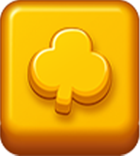
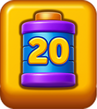
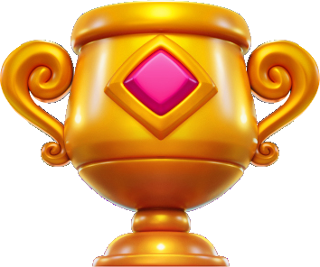
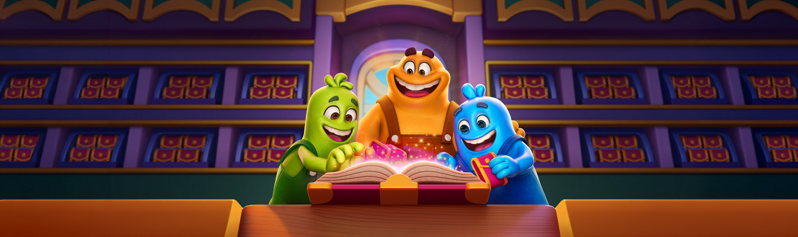

Trang chủ › Sự kiện
🎪 Sự kiện
11 sự kiện live-ops: giải đấu, pass, bộ sưu tập, leo thang. · 11 tính năng
Block Pass (battle pass)
Battle pass của game: thắng màn kiếm chìa, chìa đẩy qua các mốc, mỗi mốc có một phần thưởng miễn phí và một phần thưởng trả phí.
🔓 BlockPassConfigModel.FirstLevelToShow = 50, IsEnabled = true (client và server giống nhau).
8 use case · 967 config

Jetpack Race (đua theo chặng)
Sự kiện đua có xếp hạng, chia làm ba chặng với phần thưởng tăng dần.
🔓 JetpackRaceWithStageConfigModel.FirstLevelToShow = 80, IsEnabled = true, EventType = 1.
4 use case · 106 config

Lily Leap (Sky Jump theo chặng)
100 người, thắng liền 5 màn để về đích; người sống sót chia đều giải.
🔓 SkyJumpWithStageConfigModel.FirstLevelToShow = 40, IsEnabled = true, EventType = 1.
3 use case · 7 config

Magic Lab (nhiệm vụ tổng hợp)
Sự kiện nhiệm vụ: hoàn thành các nhiệm vụ trải khắp các sự kiện khác của game để nhận thưởng.
🔓 MagicLabConfigModel.FirstLevelToShow = 100. Client mặc định tắt (IsEnabled false) nhưng server đang bật; EventType client 4, server 7.
3 use case · 6 config

Masters Arena (giải đấu theo bộ màn riêng)
Giải đấu xếp hạng chạy trên một bộ màn riêng, tách khỏi tiến độ chính.
🔓 Điều kiện do backend quyết định qua ArenaEligibilityStatus; client chỉ hiển thị. Có bốn trạng thái đủ điều kiện: CanJoin, ShowUpdatePopUp (phải cập nhật app), NewLevelsIncoming (đang chờ bộ màn mới), Invalid.
7 use case · 364 config

Nature Collection (album thẻ)
Sự kiện sưu tầm thẻ: mở gói thẻ nhận được từ nhiều nguồn, ghép đủ bộ để nhận thưởng lớn.
🔓 CollectionConfigModel.FirstLevelToShow = 95, IsEnabled = true. MinBundleDownloadLevel = 20 là mốc bắt đầu tải trước bộ ảnh thẻ.
5 use case · 294 config
Star Blaze (GAE) — thang sao nhân chuỗi thắng
Thắng màn kiếm sao, thắng liền mạch thì hệ số leo ×1 → ×5 → ×10 → ×25 → ×100; thua thì về ×1 nhưng giữ sao. 25 mốc, 3,5 ngày/kỳ.
🔓 GaeConfigModel.FirstLevelToShow = 29, IsEnable = true, EventType = 2.
4 use case · 396 config
Streak Race (Streak Tournament, giải chuỗi thắng 24 giờ)
Giải 24 giờ: thắng liền mạch để hệ số cờ leo ×1 → ×100; thua là về ×1. Top 10 nhận coin, đối thủ là bot server.
🔓 StreakTournamentConfigModel.FirstLevelToShow = 25, IsTournamentEnable = true, IsBannerEnable = true.
5 use case · 19 config

Treasure Drill (pass trả phí theo nhiệm vụ)
Một dạng pass ngắn hạn phải mua mới nhận được thưởng: thắng màn để tiến qua các mốc, nhưng chỉ người đã mua mới mở khoá được thưởng.
🔓 TreasureDrillConfigModel.FirstLevelToShow = 110. IsEnabled = false ở cả client và server nên hiện đang tắt.
4 use case · 20 config
UFO Rise (leo thang có chốt an toàn)
Sự kiện leo thang: thắng màn thì UFO bay lên một bậc, thua thì rơi xuống — nhưng chỉ rơi tới chốt an toàn (checkpoint) gần nhất.
🔓 UfoRiseConfigModel.FirstLevelToShow = 60, IsEnabled = true, EventType = 2. ShouldShowInLevelIcon = true nên có cả biểu tượng ngay trong màn chơi.
4 use case · 275 config
Weekly Contest (giải tuần)
Giải tuần: mỗi trận thắng +1 điểm, nhóm 10 người, top 3 nhận 2.000 / 1.000 /  500 coin.
500 coin.
500 coin.🔓 WeeklyTournamentConfigModel.FirstLevelToShow = 21, IsTournamentEnable = true.
4 use case · 8 config